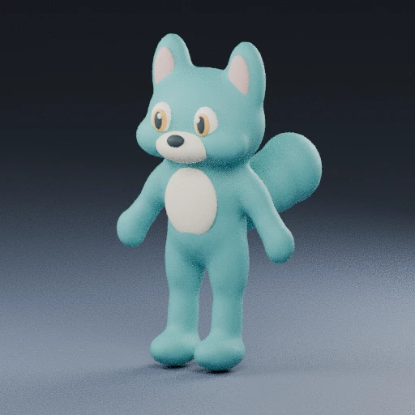
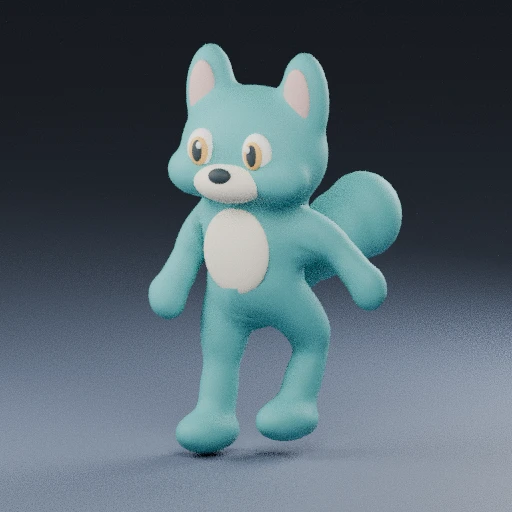
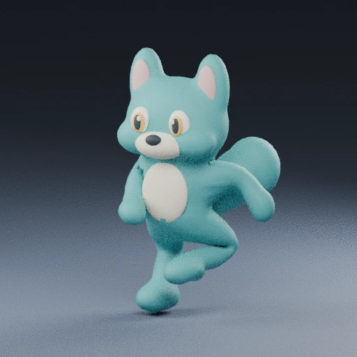

EEN WERELD VOOR JE HELE CREW
Een plek om
terug te komen.
Paper overdag. Observatory na zevenen.
Dezelfde wereld, een ander licht.
07:00–19:00 Paper Quest · 19:00–07:00 Midnight Observatory · Amsterdam

Sleep om te kijken · knijp om te zoomen · tik op het pad om erheen te lopen · kies een companion hieronder
SAMEN IN DEZELFDE RUIMTE
Twaalf plekken. Eén thuis.
Voor deze ruimte- en bewegingstest delen de twaalf plekken dezelfde nieuwe basisfiguur in andere kleuren. Dit zijn nog geen twaalf afgewerkte unieke personages. Je echte Daily Missions blijven apart.
EEN KLEINE OVERWINNING
De wereld reageert.
Laat je geselecteerde companion naar het centrale baken lopen en daar de testmissie afronden.
JOUW OORDEEL
Voelt dit meer als Gamenfy?
Feedback wordt alleen op dit apparaat bewaard.Bekijk de beweging en wat nog openstaat


De nieuwe figuur is één doorlopende huid met gewichten op een echt skelet. De animaties zijn lokaal in Blender gemaakt met voet-IK en als eigen clips geëxporteerd. De verplaatsingssnelheid volgt de paslengte van de clip. Dit is een nieuwe kandidaat, geen goedgekeurde vervanging van je bestaande character-art.
De clips en contactpunten worden technisch gecontroleerd; de uiteindelijke visuele kwaliteit en performance op jouw iPhone moeten nog worden beoordeeld. De 12-crewstand is een ruimteproef met hergebruikte geometrie, geen complete game met twaalf unieke karakters.
Vorige 3D-rig ter vergelijking → · Oudere 3D-proeven →
Deze wereld is een vrije proef; je echte missies en levels veranderen hier niet. Beweging stopt bij pauze of als deze pagina op de achtergrond staat. Bij beperkte beweging start de proef gepauzeerd.